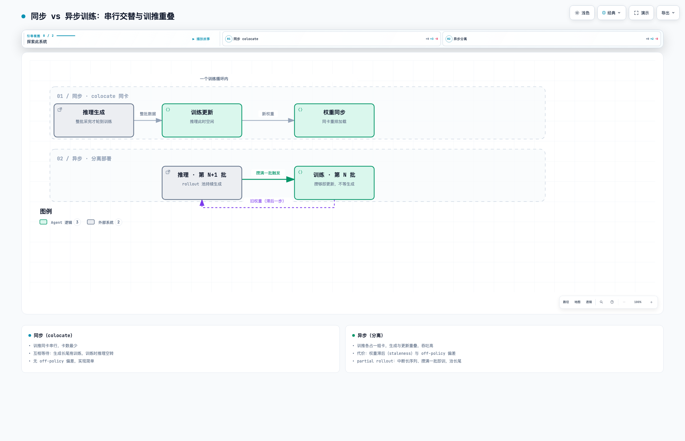

五、异步训练与 Agentic RL
1. Ray 是什么
Ray 是分布式进程编排框架。veRL 用它做三件事：把 worker 进程（actor/rollout/ref/critic）拉起到各张 GPU 上、以 WorkerGroup 为单位远程调用 worker 方法（generate_sequences / update_actor 都是跨进程调用）、传递 DataProto 数据。训练单卡跑不下时的分布式复杂度由 Ray 屏蔽，调度细节见第一章调度层与图 2。
2. 同步与异步

交互版：rl-10-同步异步.html
两种执行模式由部署方式决定：
- 同步（colocate，训推同卡）：生成 → 训练 → 权重同步，串行交替。节省卡、无 off-policy 偏差；但训练效率低，长尾样本拖住整批。
- 异步（分离部署）：推理池和训练组各占一组卡。推理攒第 N+1 批的同时，训练更新第 N 批，吞吐显著提高。代价：训练用的权重滞后于生成权重一步（staleness），引入 off-policy 偏差，需要靠 ratio 修正或更大 clip 兜底。 partial rollout：治长尾的手段——不等最长样本生成完，凑满一批可训练样本就先训，未完成的序列下轮接着生成（中断续作）。
💡性能优化方面还可以再了解下TransferQueue
3. Agentic RL
前面流程的 rollout 是"一问一答"（单轮生成）；Agentic RL 的 rollout 是多轮工具调用：模型输出 → 工具执行（搜索/代码/环境）→ 结果拼回上下文 → 继续生成，循环直到任务完成，整条轨迹（trajectory）算一个 episode，奖励在终点或过程节点给出。
两者走的是不同路线：
- veRL：框架内置 AgentLoop——固定的多轮交互循环（模型输出 → 工具执行 → 结果拼回上下文 → 继续生成），工具调用在 rollout 阶段内由框架的循环结构执行（verl/experimental/agent_loop，教程 agent_loop_tutorial.ipynb）。适合标准的 tool-use 训练，开箱即用，但交互形态是框架规定的。
- Slime：rollout 完全自定义——训练侧不规定交互形态，用自定义生成函数把任意 agent workflow 包进 rollout：多轮工具、沙箱环境、甚至把现成的编码 agent（如 Claude Code）整个当 rollout 环境用——agent 在沙箱里干活，任务完成度当 reward。轨迹由 TrajectoryManager 管理生命周期（调度生成、拼装、未完成轨迹续作），异步多轮下轨迹长短不一时靠它组批。
slime 官方图：架构图（training / rollout / data buffer）、RL 世界观图。veRL AgentLoop 官方架构图：agent_loop_architecture.png；文档：docs/advance/agent_loop.rst。


veRL 给你一个内置的 agent 循环；slime 让你把任何 agent（包括 Claude Code）接进来当环境——前者标准化省事，后者灵活度是 Agentic RL 里最高的。
Agentic RL 与第三章算法正交：PPO/GRPO/DAPO/GSPO 照用，变的是 rollout 从单轮变成带工具的多轮轨迹，reward 也变了：普通 RL 评的是答案对不对；Agentic RL 评的是整条任务完成得怎么样，甚至中间每一步工具用得好不好。
💡 Agentic RL 面临的常见问题：
- 轨迹长短不一 → 组批困难、长尾拖慢整批（TrajectoryManager、partial rollout 治这个）；
- rollout 占比更高：多轮"生成→工具→再生成"，推理时间占比常超 80%，异步部署几乎是必需；
- 奖励稀疏/延迟：分数常只在 episode 结束给出，过程奖励（PRM）设计困难；
- 上下文超长：多轮拼接后序列暴涨，KV Cache 与前缀复用成为关键；
- 工具调用容错：工具异常/超时的轨迹要能中断重试，坏轨迹污染训练数据；
- reward hacking 新形态：模型学会滥用工具（重复调用、绕过验证）骗分；
- off-policy 偏差放大：轨迹生成耗时长，训练时策略已漂移更远，clip 修正压力更大。